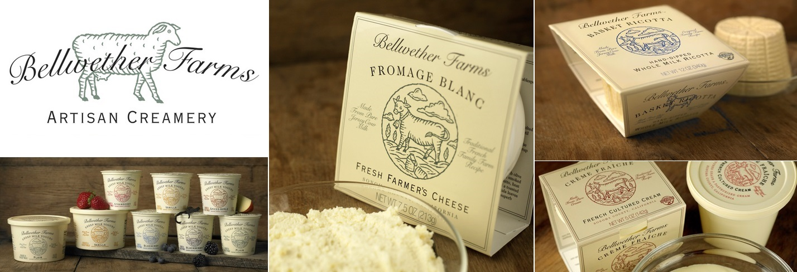

Kisah Merek adalah kisah yang menarik tentang produk atau perusahaan. Kehadiran legenda merek membantu memperkuat posisi pasar perusahaan dan meningkatkan penjualan. Anda akan menemukan lebih banyak tentang pengaruh legenda pada perasaan pelanggan, serta 7 contoh legenda merek yang sukses (dari kosmetik hingga mobil) di artikel kami.
Menulis legenda merek memungkinkan:
menekankan proposisi penjualan yang unik; Situs
membentuk "identitas" perusahaan atau merek;
membuat merek menjadi nyata.
Sejarah Merek:
menciptakan hubungan emosional yang kuat antara konsumen dan produk;
meningkatkan loyalitas pelanggan kepada perusahaan;
membedakan perusahaan dari pesaing. Situs
Sejarah Merek Harus:
menjadi menarik; Situs
mematuhi konsep penentuan posisi;
secara harmonis menampilkan proposisi penjualan yang unik;
mempertimbangkan karakteristik audiens target.
Legenda merek dapat dirumuskan baik dalam bentuk verbal maupun dalam bentuk elemen grafis. Menggunakan semua alat untuk menyampaikan legenda kepada konsumen akan memiliki efek terbesar.
Tantangan tujuan pemasaran. Jika Anda perlu meningkatkan penjualan secara signifikan dan menempati pangsa pasar yang signifikan, biaya untuk menciptakan legenda merek akan lebih tinggi.
Tingkat persaingan di pasar. Semakin tinggi persaingan, semakin sulit untuk menemukan sesuatu yang baru, untuk menemukan ceruk gratis.
Wilayah tempat produk direncanakan akan dipromosikan. Harga sebuah legenda untuk merek regional lebih rendah daripada untuk semua merek Ukraina. Jika Anda berencana untuk mengekspor ke luar negeri - biayanya akan lebih tinggi. Untuk pasar Eropa atau Asia, penelitian tambahan akan diperlukan, memverifikasi semantik kata-kata, mempelajari spesifikasi internal wilayah, dll.
Setiap proyek bersifat individual. Untuk mengetahui biaya pembuatan legenda merek, dan untuk memahami bagaimana harga terbentuk, klik tombol “menghitung proyek” (sudut kanan atas). Manajer kami akan menghubungi Anda dan mendiskusikan semua detailnya.
Pelajari audiens target. Analis kami akan membuat potret konsumen untuk mempelajari cara berpikirnya, nilai-nilai inti, kebiasaan, stereotip audiens.
Contoh: studi konsumen es krim di Ukraina.
Studi tentang pesaing. Kami akan menganalisis legenda merek pesaing Anda untuk mengidentifikasi ceruk gratis. Contoh: analisis platform merek untuk merek teh.
Analisis platform merek. Spesialis pemasaran perusahaan, konstruksi turnkey, cottage akan menciptakan gambaran keseluruhan pro dan kontra dari merek, mempertimbangkan sejarah dan karakteristik utama untuk membentuk citra positif melalui legenda merek.
Penciptaan 5 konsep legenda merek. Pada tahap ini, kami secara langsung mengembangkan cerita yang unik dan menarik, yang akan menjadi legenda merek. Ini akan berisi nilai-nilai dan ide-ide yang penting bagi konsumen potensial dan secara harmonis masuk ke dalam sejarah perusahaan.
Presentasi kepada pelanggan dari 5 konsep dan pilihan salah satunya.
Penyempurnaan akhir dari konsep yang dipilih.
Harus diingat bahwa pengembangan legenda merek tidak mungkin terjadi tanpa konsep posisi yang jelas dan proposisi penjualan yang unik. Berdasarkan elemen-elemen ini, legenda merek sedang dikembangkan. Jika produk Anda belum memiliki konsep penentuan posisi dan USP yang dikembangkan, spesialis perusahaan konstruksi turnkey akan dengan senang hati membantu Anda memecahkan masalah ini.
Legenda ini adalah versi posisi yang terperinci dan mengungkapkan kualitas unik merek. Sejarah merek digunakan dalam semua komunikasi internal dan eksternal lebih lanjut. Legenda adalah salah satu alat promosi, serta dasar dari konsep periklanan.
 Tidak ada kriteria dan aturan ketat untuk membuat legenda merek, setiap cerita benar-benar individual.
Kisah merek dapat didasarkan pada:
fakta sejarah - tradisi berabad-abad, peristiwa sejarah, tempat legendaris, sejarah berdirinya perusahaan, peristiwa penting secara sosial terkait dengan merek; Situs
peristiwa nyata - peristiwa andal yang memengaruhi pembentukan dan pengembangan perusahaan; Situs
sumber luar biasa - kisah menarik fiktif, biasanya terkait dengan asal produk atau perusahaan.
Sketsa gaya hidup konsumen. Legenda menyampaikan situasi kehidupan nyata yang terjadi dalam proses konsumsi suatu produk. Tidak ada rekayasa dan fantasi. Contohnya adalah foto dari kehidupan keluarga bahagia yang berkumpul di meja yang sama untuk mencoba produk Anda.
Kisah nyata. Legenda didasarkan pada cerita yang benar-benar terjadi pada merek. Misalnya, popok Pampers yang terkenal ditemukan oleh kakek peduli Victor Mills untuk cucunya. Benar, ini atau fiksi pemasar masih belum diketahui, tetapi legenda 100% menyampaikan gagasan utama merek - merawat yang terkecil.
Gaya hidup. Tampilkan gaya hidup target audiens merek. Misalnya, legenda fantastis tentang efek Axe dibangun di sekitar fantasi dan keinginan audiens target.
Legenda fantasi. Dasar dari cerita semacam itu adalah situasi yang secara praktis tidak mungkin dalam kehidupan nyata. Misalnya, sapi ungu yang menghasilkan susu coklat Milka. Legenda ini mengkonfirmasi susu UTP Milka - alpine dalam cokelat.
Ciptakan suasana hati. Legenda berfokus pada dampak emosional, seperti perasaan cinta, kelembutan, keindahan, feminitas, dll. Misalnya, iklan TM Corona yang penuh gairah yang didedikasikan untuk kemasan cokelat macan tutul terbatas. Atau legenda merek Raffaello - hadiah romantis yang sempurna.
Karakter simbolis yang merupakan bagian dari legenda. Jika Anda melihat kelinci Quickie, Anda tidak akan memiliki asosiasi selain kakao Nesquik panas. Contoh lain adalah Cokelat Merah dan Kuning yang populer, di mana setiap orang langsung mengenali M&M.
Fokus pada teknologi. Pesan komunikasi yang dibangun di atas teknologi unik untuk menciptakan suatu produk atau menggunakannya sebagai bagian dari komponen unik. Sering digunakan dalam iklan untuk teh, kopi, sangat penting untuk alkohol.
Fakta ilmiah. Legenda berdasarkan fakta nyata dan dapat dibuktikan. Misalnya, TM Ridna Rosa memberi tahu kami bahwa vodka-nya tidak mengandung gliserin dan zat berbahaya lainnya - dan ini adalah fakta yang terbukti secara ilmiah.
Bukti yang mendukung produk. Ulasan konsumen yang puas, rekomendasi dari tokoh terkenal atau popularitas massal. Sebagai contoh: 80% dari peserta penelitian mencatat bahwa kerutan dan kerutan kecil menjadi kurang terlihat (kulit menjadi lebih bersih, dana bertahan lebih lama, dll.).